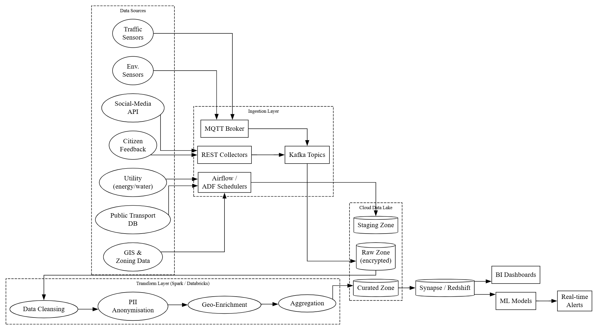

Smart City Data Management – Campo Belo, MG (Brazil)
Role: Lead Data Management Consultant
Developed the strategic blueprint for a citywide smart data platform—connecting millions of sensor events, citizen inputs, and legacy systems to enable trusted, actionable analytics for every neighborhood.
Campo Belo’s Smart City Initiative aims to transform public safety, mobility, energy management, and citizen services through advanced data management. I architected a flexible, modular data ecosystem for phased rollout: starting with pilot neighborhoods, then scaling citywide over 5–10 years in close partnership with the city’s IT and analytics teams.
- Blueprint for real-time, GDPR-compliant data integration, transformation, and analytics
- Hybrid data models for IoT, mobility, public services, and citizen engagement
- Centralized metadata, data lineage, and master data management for all city entities
- Automated dashboards and predictive analytics for traffic, safety, and city ops
- Data Engineering: Azure Data Lake, Kafka, MQTT, Airflow, Databricks (Spark)
- Modeling & Storage: Time-Series DBs, SQL/Redshift, hybrid schemas
- Metadata & Governance: Apache Atlas, DataHub, Azure Purview, GDPR/AI-ethics workflows
- Master Data: Fuzzy Matching, Golden Records, Hub-and-Spoke MDM
- Analytics/AI: Real-time dashboards, predictive ML (Azure ML, Databricks), prescriptive alerts
Orchestrated integration of traffic, safety, environmental IoT sensors, citizen apps, public transport, and utility data—via a secure, modular ELT pipeline for both real-time and batch analytics. Designed for data minimization, privacy by design, and operational resilience.

Combined time-series databases (for sensor/event data) with relational databases (for master data, compliance, and advanced queries). Supported hourly/daily roll-ups, geo-enrichment, and rapid retrieval for everything from congestion monitoring to incident analysis.

Launched automated technical/business metadata harvesting with full lineage and quality tracking. Inspired by best-in-class approaches (e.g. DataHub, Apache Atlas). Delivered transparency, discoverability, and compliance—empowering all city teams to leverage trusted data.

Built a central hub-and-spoke MDM architecture to create “golden records” for citizens, vehicles, and sensors, using fuzzy matching and survivorship logic. This ensured high-quality, up-to-date master data for all city operations—drawing on global best practices (e.g. Barcelona, London).

Established automated monitoring for accuracy, completeness, timeliness, and consistency. Embedded GDPR/AI-ethics into all workflows (consent, rectification, deletion, bias checks) with transparent dashboards for stewardship and regulatory review.
Designed real-time and predictive analytics for traffic congestion, incident risk, smart parking, and citizen engagement. Created the roadmap for future ML/AI innovation—such as federated learning, edge-based computer vision, NLP for feedback, and graph analytics for dynamic routing.
This project for Campo Belo demonstrates my expertise at the intersection of data engineering, urban analytics, and digital transformation—delivering a scalable, AI-ready platform to help cities evolve. The implementation will begin with small neighborhoods and, over the next 5–10 years, scale to serve the entire city, in close partnership with local teams.
Confidentiality note: Only illustrative system diagrams are shown. No live city data or source code is public.